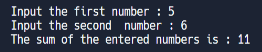
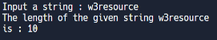
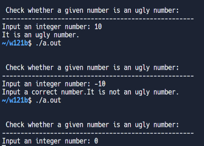
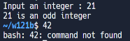
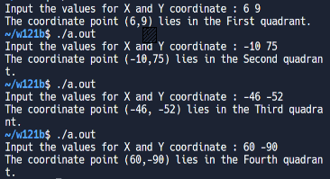
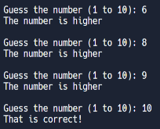
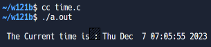
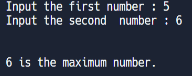
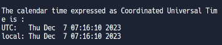
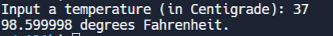

w15 <<
Previous Next >> c_ex
ANSIC
1.
#include <stdio.h>
int main()
{
// 声明并初始化字符变量
char char1 = 'X';
char char2 = 'M';
char char3 = 'L';
// 打印原始和反转字符
printf("The reverse of %c%c%c is %c%c%c\n",
char1, char2, char3,
char3, char2, char1);
return(0);
}
2.
#include <stdio.h>
int main() {
int j, numbers[5], total=0; // 声明循环计数器、一个包含五个数字的数组以及总和变量
// 提示用户输入五个数字，并将它们存储在数组中
printf("\n輸入第一個數字：");
scanf("%d", &numbers[0]);
printf("\n輸入第二個數字：");
scanf("%d", &numbers[1]);
printf("\n輸入第三個數字：");
scanf("%d", &numbers[2]);
printf("\n輸入第四個數字：");
scanf("%d", &numbers[3]);
printf("\n輸入第五個數字：");
scanf("%d", &numbers[4]);
// 通过循环遍历这些数字，找到并计算奇数的总和
for(j = 0; j < 5; j++) {
if((numbers[j] % 2) != 0)
{
total += numbers[j];
}
}
// 打印奇數總和
printf("\n所有奇數的總和：%d", total);
printf("\n");
return 0;
}
3.
#include <stdio.h>
int main() {
float x, y, z, P; // 声明變量以存儲三角形的三邊長和周長
// 提示用戶輸入三個數字，分別存儲在 'x'、'y' 和 'z'
printf("\n輸入第一個數字：");
scanf("%f", &x);
printf("\n輸入第二個數字：");
scanf("%f", &y);
printf("\n輸入第三個數字：");
scanf("%f", &z);
if (x < (y + z) && y < (x + z) && z < (x + y)) // 檢查這三個數字是否能構成一個三角形
{
P = x + y + z; // 計算周長
printf("\n周長 = %.1f\n", P); // 輸出周長
}
else
{
printf("無法構成三角形..！"); // 如果無法構成三角形，輸出相應的消息
}
return 0;
}
4.
#include <stdio.h>
int main()
{
// 宣告變數和指標
int fno, sno, *ptr, *qtr, sum;
// 提示用戶輸入第一個數字
printf("\n\n Pointer : Add two numbers :\n");
printf("--------------------------------\n");
printf(" 輸入第一個數字 : ");
scanf("%d", &fno);
// 提示用戶輸入第二個數字
printf(" 輸入第二個數字 : ");
scanf("%d", &sno);
// 指向第一個數字的指標
ptr = &fno;
// 指向第二個數字的指標
qtr = &sno;
// 計算兩數的總和
sum = *ptr + *qtr;
// 輸出總和
printf(" 輸入的兩個數字的總和 : %d\n\n", sum);
return 0;
}

5.
#include <stdio.h>
// 函數原型
int calculateLength(char*);
void main()
{
char str1[25];
int l;
printf("\n\n 指針：計算字符串的長度：\n");
printf("---------------------------------------------------\n");
// 輸入一個字符串
printf(" 輸入一個字符串：");
fgets(str1, sizeof str1, stdin);
// 計算字符串的長度
l = calculateLength(str1);
// 輸出字符串的長度
printf(" 給定字符串 %s 的長度是：%d ", str1, l - 1);
printf("\n\n");
}
// 函數，用於計算字符串的長度
int calculateLength(char* ch)
{
int ctr = 0;
// 通過迭代字符直到遇到空字符
while (*ch != '\0')
{
ctr++;
ch++;
}
return ctr;
}

6.
# include <stdio.h>
# include <string.h>
int main()
{
int n, x = 0;
printf("\n\n 檢查給定數字是否是醜數:\n");
printf("----------------------------------------------------\n");
// 輸入一個整數
printf(" 輸入一個整數: ");
scanf("%d", &n);
if (n <= 0)
{
printf("請輸入正確的數字.");
}
while (n != 1)
{
if (n % 5 == 0)
{
n /= 5;
}
else if (n % 3 == 0)
{
n /= 3;
}
else if (n % 2 == 0)
{
n /= 2;
}
else
{
printf("它不是一個醜數.\n");
x = 1;
break;
}
}
if (x == 0)
{
printf("它是一個醜數.\n");
}
return 0; // 返回 0，表示正常結束程序
}

7.
#include <stdio.h> // 包含標準輸入/輸出頭文件。
void main()
{
int num1, rem1; // 声明两个整数变量 'num1' 和 'rem1'。
printf("輸入一個整數: "); // 提示用戶輸入一個整數。
scanf("%d", &num1); // 讀取並將用戶輸入的值存儲在 'num1' 中。
rem1 = num1 % 2; // 計算 'num1' 除以 2 的餘數。
if (rem1 == 0) // 檢查餘數是否等於 0。
printf("%d 是一個偶數\n", num1); // 打印一條消息，指示 'num1' 是一個偶數。
else
printf("%d 是一個奇數\n", num1); // 打印一條消息，指示 'num1' 是一個奇數。
}

8.
#include <stdio.h> // 包含標準輸入/輸出頭文件。
void main()
{
int co1, co2; // 声明两个整数变量 'co1' 和 'co2' 來存儲座標。
printf("輸入X和Y坐標的值："); // 提示用戶輸入座標。
scanf("%d %d", &co1, &co2); // 讀取並將用戶輸入的值存儲在 'co1' 和 'co2' 中。
if (co1 > 0 && co2 > 0) // 檢查 'co1' 和 'co2' 是否都是正數。
printf("該座標點（%d,%d）位於第一象限。\n", co1, co2); // 打印一條消息，指示該座標位於第一象限。
else if (co1 < 0 && co2 > 0) // 檢查 'co1' 是否為負數並且 'co2' 是否為正數。
printf("該座標點（%d,%d）位於第二象限。\n", co1, co2); // 打印一條消息，指示該座標位於第二象限。
else if (co1 < 0 && co2 < 0) // 檢查 'co1' 和 'co2' 是否都是負數。
printf("該座標點（%d, %d）位於第三象限。\n", co1, co2); // 打印一條消息，指示該座標位於第三象限。
else if (co1 > 0 && co2 < 0) // 檢查 'co1' 是否為正數並且 'co2' 是否為負數。
printf("該座標點（%d,%d）位於第四象限。\n", co1, co2); // 打印一條消息，指示該座標位於第四象限。
else if (co1 == 0 && co2 == 0) // 檢查 'co1' 和 'co2' 是否都是零。
printf("該座標點（%d,%d）位於原點。\n", co1, co2); // 打印一條消息，指示該座標位於原點。
}

9.
#include <stdio.h> // 包含標準輸入/輸出頭文件。
#include <stdlib.h> // 包含標準庫頭文件。
#include <time.h> // 包含時間頭文件，用於生成隨機數。
int main() // 主函數的開始。
{
int number, input; // 声明兩個整數變量 'number' 和 'input'。
srand(time(NULL)); // 使用當前時間初始化隨機種子。
number = rand() % 10 + 1; // 生成一個介於1到10之間的隨機數並將其存儲在 'number' 中。
do { // 開始一個 do-while 循環。
printf("\n猜數字 (1 到 10): "); // 打印一條消息，提示用戶猜數字。
scanf("%d", &input); // 讀取用戶的輸入並將其存儲在 'input' 中。
if (number > input) // 如果隨機數大於用戶的輸入。
printf("數字較大\n"); // 打印一條消息，指示數字較大。
} while (number != input); // 只要用戶的輸入不等於隨機數，就繼續循環。
printf("答對了！\n\n"); // 打印一條消息，指示用戶猜對了。
return 0; // 返回 0，表示程序運行成功。
} // 主函數的結尾。

10.
#include <time.h> // 包含時間頭文件。
#include <stdio.h> // 包含標準輸入/輸出頭文件。
#include <stdlib.h> // 包含標準庫頭文件。
int main(void)
{
time_t cur_time; // 声明一個 time_t 類型的變量 'cur_time' 用於存儲當前時間。
char* cur_t_string; // 声明一個字符指針 'cur_t_string' 用於存儲轉換後的時間字符串。
cur_time = time(NULL); // 獲取當前的日期和時間。
if (cur_time == ((time_t)-1))
{
(void) fprintf(stderr, "無法獲取當前日期和時間。\n");
exit(EXIT_FAILURE); // 如果獲取失敗，輸出錯誤消息並退出程序。
}
cur_t_string = ctime(&cur_time); // 將時間轉換為本地時間格式的字符串。
if (cur_t_string == NULL)
{
(void) fprintf(stderr, "無法轉換當前日期和時間。\n");
exit(EXIT_FAILURE); // 如果轉換失敗，輸出錯誤消息並退出程序。
}
(void) printf("\n 當前時間是：%s \n", cur_t_string); // 打印當前的日期和時間字符串。
exit(EXIT_SUCCESS); // 退出程序，表示成功執行。
}

11.
#include <stdio.h>
#include <stdlib.h>
void main()
{
int fno, sno, *ptr1 = &fno, *ptr2 = &sno;
printf("\n\n 指針：找出兩個數字之間的最大值：\n");
printf("------------------------------------------------------------\n");
printf(" 輸入第一個數字：");
scanf("%d", ptr1);
printf(" 輸入第二個數字：");
scanf("%d", ptr2);
if (*ptr1 > *ptr2)
{
printf("\n\n %d 是最大的數字。\n\n", *ptr1);
}
else
{
printf("\n\n %d 是最大的數字。\n\n", *ptr2);
}
}

12.
#define __STDC_WANT_LIB_EXT1__ 1
#include <stdio.h>
#include <time.h>
int main(void)
{
time_t t = time(NULL); // 獲取當前時間的秒數，存儲在變數 't' 中。
printf("\n 表達為協調世界時的日曆時間是：");
printf("\n UTC: %s", asctime(gmtime(&t))); // 使用 'gmtime' 將時間轉換為 UTC 時間，然後使用 'asctime' 打印。
printf(" 本地時間: %s\n", asctime(localtime(&t))); // 使用 'localtime' 將時間轉換為本地時間，然後使用 'asctime' 打印。
#ifdef __STDC_LIB_EXT1__
struct tm buf;
char str[26];
asctime_s(str, sizeof str, gmtime_s(&t, &buf)); // 安全版本：使用 'gmtime_s' 將時間轉換為 UTC 時間，然後使用 'asctime_s' 打印。
printf(" UTC: %s", str);
asctime_s(str, sizeof str, localtime_s(&t, &buf)); // 安全版本：使用 'localtime_s' 將時間轉換為本地時間，然後使用 'asctime_s' 打印。
printf(" 本地時間: %s", str);
#endif
}

13.
#define __STDC_WANT_LIB_EXT1__ 1
#include <stdio.h>
#include <time.h>
int main(void)
{
time_t t = time(NULL); // 獲取當前時間的秒數，存儲在變數 't' 中。
printf("\n 表達為協調世界時的日曆時間是：");
printf("\n UTC: %s", asctime(gmtime(&t))); // 使用 'gmtime' 將時間轉換為 UTC 時間，然後使用 'asctime' 打印。
printf(" 本地時間: %s\n", asctime(localtime(&t))); // 使用 'localtime' 將時間轉換為本地時間，然後使用 'asctime' 打印。
#ifdef __STDC_LIB_EXT1__
struct tm buf;
char str[26];
asctime_s(str, sizeof str, gmtime_s(&t, &buf)); // 安全版本：使用 'gmtime_s' 將時間轉換為 UTC 時間，然後使用 'asctime_s' 打印。
printf(" UTC: %s", str);
asctime_s(str, sizeof str, localtime_s(&t, &buf)); // 安全版本：使用 'localtime_s' 將時間轉換為本地時間，然後使用 'asctime_s' 打印。
printf(" 本地時間: %s", str);
#endif
}

14.
#include <stdio.h>
int main() {
float numbers[5]; // 声明一個數組來存儲5個數字
int j, pctr = 0, nctr = 0; // 声明循环计数器、正數計數和負數計數
// 提示用戶輸入五個數字，並將它們存儲在數組中
printf("\n輸入第一個數字：");
scanf("%f", &numbers[0]);
printf("\n輸入第二個數字：");
scanf("%f", &numbers[1]);
printf("\n輸入第三個數字：");
scanf("%f", &numbers[2]);
printf("\n輸入第四個數字：");
scanf("%f", &numbers[3]);
printf("\n輸入第五個數字：");
scanf("%f", &numbers[4]);
for (j = 0; j < 5; j++) {
if (numbers[j] > 0) // 檢查數字是否為正數
{
pctr++; // 增加正數計數
} else if (numbers[j] < 0) // 檢查數字是否為負數
{
nctr++; // 增加負數計數
}
}
// 輸出正數和負數的個數
printf("\n正數的個數：%d", pctr);
printf("\n負數的個數：%d", nctr);
printf("\n");
return 0;
}
w15 <<
Previous Next >> c_ex